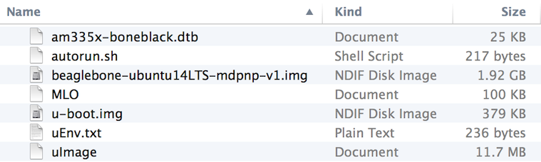
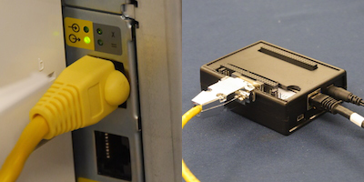
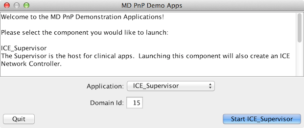
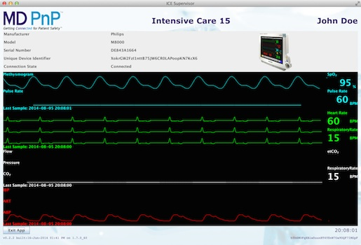

OpenICE Medical Device Adapter Setup
Getting Started
This tutorial contains content that is not displayed on mobile browsers. Please use a desktop/laptop browser to take advantage of all images.
This guide will assist you in setting up a Beaglebone Black (BBB) as a device adapter for integrating supported medical devices into an OpenICE environment. OpenICE is an open source, prototype implementation of the FDA recognized reference architecture ASTM F2761 - the Integrated Clinical Environment. The device adapters function as means of converting the proprietary data output from existing medical devices into the common data fabric used in OpenICE. OpenICE is built on Object Management Group Data Distribution Service (DDS) and uses the terminology from ISO/IEEE 11073.
OpenICE device adapters can be used for acquisition of waveform and numeric medical data, research and prototyping of interoperable environments, and for research and development of a new class of data-aware medical applications.
The OpenICE device-adapter service is the core software that functions as the intermediary between the medical device and the OpenICE DDS network. The device-adapter service is a Java application that can theoretically run on any Java friendly hardware platform, including embedded systems, laptops, servers, Raspberry Pis, Intel Galileos, Beagleboards, etc. This device-adapter is not intended to be a permanent solution. Ideally, the functionality of the device-adapter would be available natively from a medical device.
This tutorial uses Beaglebone Black as the hardware platform. BBB is a single board, Linux-driven computing platform. It was chosen as the preliminary implementation platform due to the open-hardware, community supported design and the high performance to cost ratio of the device. At the time of writing, a Beaglebone Black can be purchased for $55.
Currently Compatible Devices
- Philips MPxx Intellivue - Ethernet Connection
- Philips MPxx Intellivue - Serial Connection
- Masimo Radical 7
- Dräger Apollo
- Dräger Evita XL
- Dräger Evita 4
- Dräger V500
- Ivy 450C
- Nonin
- Capnostream 20
- Nellcor N595
- Bernoulli
Included Device Simulators
- Multi-Parameter Patient Monitor
- Non-Invasive Blood Pressure
- Electrocardiogram
- End Tidal CO2
- Temperature
- Infusion Pump
- Pulse Oximetry
- Multi-channel Pulse Oximetry
Process Overview
Required Hardware
- Beaglebone Black
- This process was tested with a BBB revision B board. Other Beaglebone revisions may (and should) work. This procedure was tested with the Beaglebone's existing OS running Stock Angstrom and Ubuntu 12.04.
- 5V Power Supply
- Please use a dedicated 5V 1A power supply for your BBB during this process. The flashing process may use more than the 500mA allowed by some USB 2.0 laptop and computer ports. Exceeding this limit could disable the power and corrupt the memory on the BBB.
- MicroSD Card
- At least 2GB of space is required. This process was tested with an 8GB card, formatted as fat16. You will also need some method of connecting the MicroSD card to your computer. A simple USB adapter is recommended.
- A Computer
- Needed for preparing the MicroSD card. This process should be possible on any operating system. Windows users will have to ensure that they have the tools needed for decompressing .tar.xz images. This will be easiest on either Linux or OS X.
Required Software
- Disk Image
- Download the MD PnP Beaglebone Black disk image. Details about the software installed in disk image can be found below. This image will replace the memory of the BBB. To decompress the disk image, navigate to the directory where you downloaded the disk image and type:
tar -xJf beaglebone-ubuntu14LTS-mdpnp-v1.img.tar.xz
Windows users should investigate the XZ Utils binary distribution for xz tar ball decompression.
- eMMC Flashing Tool
- Download the Beaglebone eMMC memory flashing micro-kernel. The flashing tool will sit on the MicroSD card next to the disk image. When the BBB boots, the kernel will overwrite the disk image on the internal eMMC memory of the BBB, replacing the currently installed filesystem. This is accomplished using a startup shell script that runs the dd command. More information about the tool can be found here.
Software Installed in the Disk Image:
- Ubuntu 14.04 LTS
- The disk image contains an Ubuntu filesystem from ARMhf. The exact kernel installed is ubuntu-trusty-14.04-rootfs-3.14.4.1-bone-armhf.com. The included Ubuntu kernel is headless for embedded development with minimal meta package and features hard float support.
- Oracle SE JDK
- The Java Standard Edition Development Kit 7 is installed for ease of debugging on-board applications. The JDK version is 7u60 (jdk-7u60-linux-arm-vfp-hflt). You can find it here.
- MD PnP OpenICE
- MD PnP provides a demo application for both serving as the medical device adapter and for viewing and interacting with the OpenICE network on a computer. Later in the tutorial, we will configure the installed demo application to function as a device adapter. To view and interact with the data on your personal computer, simply install the software by clicking the big green download button on the linked page.
- NTP Daemon
- The Network Time Protocol daemon (NTPd) package is installed on the disk image. The OpenICE environment requires all nodes to sync to a NTP clock for data accuracy and alignment. The time zone of the BBB image has been set to eastern.
Prepare the MircoSD Card
Now we are going to create a MicroSD card that the BBB can use to automatically flash it's memory.
- Unzip and copy contents of the eMMC Flashing Tool download (beagleboneblack-save-emmc.zip) to the empty MicroSD card
- Copy the BBB disk image to MicroSD card. Your MicroSD card should look like this:

- Open the autorun.sh shell script with your favorite text editor and modify the contents as shown:
From:
#!/bin/sh
echo timer > /sys/class/leds/beaglebone\:green\:usr0/trigger
dd if=/mnt/BeagleBoneBlack-eMMC-image-XXXXX.img of=/dev/mmcblk1 bs=10M
sync
echo default-on > /sys/class/leds/beaglebone\:green\:usr0/trigger
To:
#!/bin/sh
echo timer > /sys/class/leds/beaglebone\:green\:usr0/trigger
dd if=/mnt/beaglebone-ubuntu14LTS-mdpnp-v1.img of=/dev/mmcblk1 bs=10M
sync
echo default-on > /sys/class/leds/beaglebone\:green\:usr0/trigger
That's it. Your MicroSD card is ready.
Flashing the Memory
NOTE: This process will obviously overwrite the contents of your BBB's internal memory. Backup any content you wish to preserve.
- Insert the MicroSD card into the BBB
- Plug in the BBB power supply (No need to hold S2 button used to boot directly to MicroSD)
WARNING: Do not use the USB power during the flashing process. eLinux reports that this process may exceed 500mA and trigger a PC or laptop to disable USB power. Please you a dedicated 5V 1A power supply as detailed above.
- When the image starts copying onto the BBB, USR0 LED (the outside most blue LED near button S1) will blink slowly - compared to the usual heartbeat blink pattern.
- When the USR0 light goes solid, remove the power and MicroSD card
- Your beagle is now running Ubuntu 14.04.1 LTS and has the OpenICE device adapter software installed. It can now be configured to run as a device adapter for any of the supported devices. In the next section we will configure the adapter to communicate with a Philips MP70.
NOTE: The BBB with Ubuntu will take up to 3 minutes to boot without a network cable attached.
Example MP70 OpenICE Adapter
Required Hardware
- Philips MP70
- The device adapter software was developed using a MP70 rev.J. Software revisions G through K are expected to be compatible with the OpenICE device adapter software but this claim has not been tested.
- OpenICE Beaglebone
- This is your newly imaged Beaglebone Black as configured in previous section. The MD PnP Beaglebone image contains the software necessary to run the OpenICE device adapter we will configure to communicate with the MP70.
- RS232 Cape
- To connect the Beaglebone and the MP70, we will use a Beaglebone Black serial cape and a special cable described below.
- RJ45 to DB-9
- To connect to the RJ45 port on the MP70 to the DB-9 port on the RS232 cape, a custom RJ45 to DB-9 cable is needed. If you wish to make the cable, the MP70 'Data Export Program Guide' depicts the pinout of the RJ45 port. However, we have observed that this pinout matches the common RJ45 to DB-9 "Cisco console cable". This cable is available from many distributors and should allow the devices to connect.
- Computer w/ OpenICE
- A computer running the MD PnP OpenICE demo application. This will allow us to view the MP70 data in the OpenICE network. The software can be downloaded from Sourceforge. This is the same MD PnP OpenICE application included on the Beaglebone disk image as described above.
- A Network
- You will need a network to connect the devices to that is capable of DHCP. A standard home WiFi router is sufficient.
- Monitor and Keyboard
- You will need a means of configuring the Beaglebone software. The most obvious means of accomplishing this is a monitor with HDMI connection to the BBB and a keyboard. It is advised to setup SSH for using the device adapter.
Connect the Devices

- Attach the RS232 serial cape to the Beaglebone expansion headers. Ensure the serial cape is configured correctly - the jumpers should be set to UART1.
- Plug the RJ45 - DB-9 cable into the Beaglebone.
- Plug the RJ45 - DB-9 cable into the MP70. There are multiple RJ45 ports - plug into one where the light is on next to a circle with an arrow coming OUT of the circle as shown in the picture.
- Turn both devices on.
Setup a Network
Now, connect the device adapter and your computer to the same DHCP-capable network. For this example, a standard home WiFi router is used.
- Connect your computer to the network via WiFi or Ethernet cable.
- Use an Ethernet cable to connect the BBB to the router.
- Type ifconfig in the BBB terminal and ensure the output shows an assigned IP addressed.
NOTE: You will need to ensure your BBB has a means of establishing time. Either set the time manually or connect your network to the internet for NTP communication.
With our system connected, we finally need to specify what type of medical device is connected to the Beaglebone device adapter. This is specified in the configuration file of the device adapter application on the Beaglebone. The device configuration file is called "device.this" and is located in the home directory of the default Ubuntu user. All terminal entries are relative to the default home directory.
- To configure the Beaglebone to function as a device adapter for the MP70, in the terminal enter:
echo 15 IntellivueSerial=ttyO1 > device.this (Note: Letter O not number 0)
This entry will write "15 IntellivueSerial=ttyO1" to the file "device.this". "15 IntellivueSerial=ttyO1" indicates that the device adapter is for a Philips Intellivue device, using the serial version of the driver, communicating over BBB serial port interface ttyO1, and that device adapter will publish to OpenICE DDS domain 15.
- Restart the Beaglebone. The device adapter software will automatically start.
If you are trying to connect to a device that is not a MP70, the previous steps will be different.
- To display a list of available options for different device adapters and simulators, enter:
demo-apps-0.2.2/bin/demo-apps —-help
- If you wanted to start a simulated electrocardiogram monitor on domain 5, for example, the entry in "device.this" would have "ECG_Simulator" as the device name preceded by "5". The BBB terminal input would be:
echo 5 ECG_Simulator > device.this
View the Data
Use the MD PnP OpenICE demo app to view the MP70 data.
On your computer:
- Open the OpenICE Demo Application you download from Sourceforge.
- Start an ICE_Supervisor on Domain 15.

- Once the device has finished negotiating, click on the MP70 icon to view the waveform and numeric data in the OpenICE network. You have now integrated an MP70 into the OpenICE!

Troubleshooting
If you experience issues with the device adapter setup, please try the following:
- Restart the demo-app on your computer
- Restart OpenICE device-adapter service on the Beaglebone with:
- sudo service device-adapter stop
- sudo service device-adapter start
- If you change networks while using the demo-app, please restart the demo-app after you have connected to the desired network.
- Ensure that you spelled the contents of device.this correctly, e.g. "15 IntellivueSerial=ttyO1".
- In the Demo Apps on your computer, if you see numeric vital signs but no waveforms, check the time on the BBB and ensure that NTP is running syncing.
- If your BBB is not syncing the time properly, ensure the network you're using has internet access in order to communicate with NTP server.